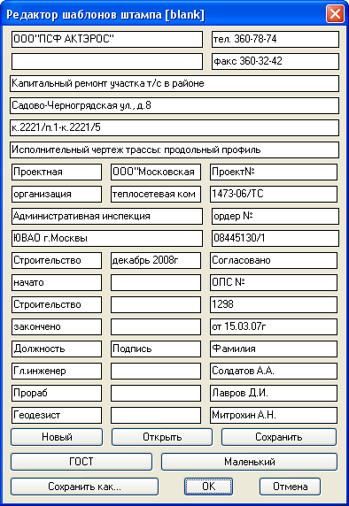
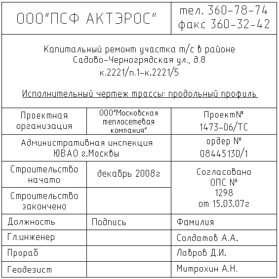
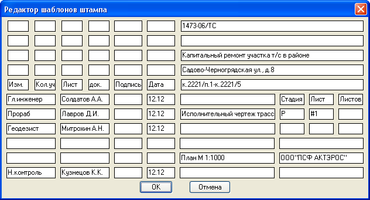
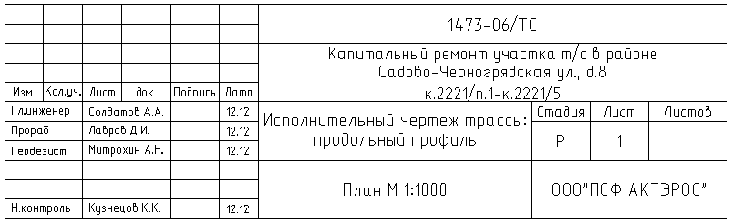
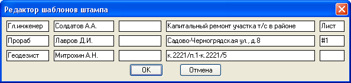
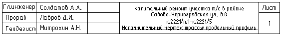

Редактор содержимого штампа, поддерживает большой, маленький, ГОСТ штампы.
Основная идея штамп редактора состоит в том что, в пределах одного объекта приходится в чертежи вставлять три вида штампов Большой, Маленький и ГОСТ. Поэтому приходится отдельно заполнять три штампа, конечно копирование вставка несколько снижает проблемность, но не решает. Предлагаю свой способ решения проблемы: один раз создается некий текстовый файл с расширением sht в котором записаны данные объекта а при вставке задается только тип штампа а программа выбирая нужные данные из файла формирует штамп. Как раз для ввода и редактирования содержимого текстового файла и служит данный редактор. Редактор состоит из основного окна ( в нем содержится наиболее полная информащия), имеются также два дополнительных окна чтобы посмотреть и/или подправить данные как они будут выглядеть в маленьком и ГОСТ штампе.
Основное окно редактора выглядит так.
В названии окна в квадратных скобках указано имя открытого файла в данном случае имя blank означает что открыт Новый файл и содерфимое штампа отвечает содержимому прототипа (чистого файла). Если нажать кнопку Новый содержимое штампа сбросится до такого состояния. Также если у нас есть уже сохраненные файлы шаблонов штампов их можно Открыть одноименной кнопкой через стандартный диалог открыть. После редактирования файл можно Сохранить или Сохранить как... например с другим именем или в другую папку. Если нажать кнопку Сохранить после редактирования бланкового (Нового) файла последует запрос Сохранить как... Чтобы изменить содержимое "чистого" штампа нужно поменять файл C:\Documents and Settings\[имя пользователя]\Application Data\geo_tools\template\blank.sht это и есть собственно шаблонный штамп. Каждая ячейка штампа при вставке имеет собственное форматирование и размер шрифта. Некоторые поля редактора при вставке штампа объединяются по возможности используется автоперенос по словам в пределах ячейки штампа при вставке. Главное или основное окно редактора соответствует Большому штампу в нем присутствуют все дааные которые будут нужны в маленьком но некоторые графы унакальны для ГОСТ штампа. После вставки Большой штамп будет выглядеть так.
Для проверки правильно перенесенной информации, а текже добавления не достающих данных в ГОСТ штамп следует нажать кнопку ГОСТ. Появится такое окно.
Большинство данных было взято из основного окна но есть и уникальные. Среди них номер листа: # - знак решетки (диез) перед цифрой означает, что при каждой вставке штампа эта цифра будет увеличиваться на единицу. После вставки штамп ГОСТ будет выглядеть так
Если нажать кнопку Маленький можно посмотреть как введеные данные будут выглядеть в штампе


Если нажать кнопку OK во вспомогательных окнах данные измененные в них обновяться в главном окне, Отмена отменяет редакцию во вспомогательных окнах. Если нажать OK в главном окне то текущее состояние ячеек будет сохранено в открытом файле (если открыт blank будет предложено Сохранить как...) и открытый файл примется как текущий. С помощью команд Вставить штамп вставляется именно текущий штамп.